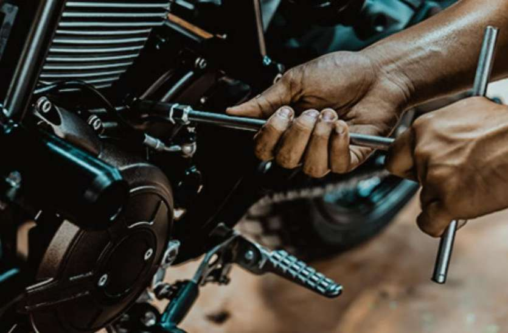

we provide

Servicing
Apart from these above mentioned tips, bike servicing also includes battery maintenance, checking fork oil after every 2500 kilometres of usage, checking sprockets after every 3,000 kilometres of usage and replacing them if necessary.

Bike Modifying
Modified bikes are machines which have the appearance or functions altered. There are a number of reasons why several motorcyclists desire to modify their bikes. Some may want to make them more comfortable.

Foam Wash
Pre-wash foam or snow foam is a specialized car wash solution designed to cover the entire surface of a vehicle.